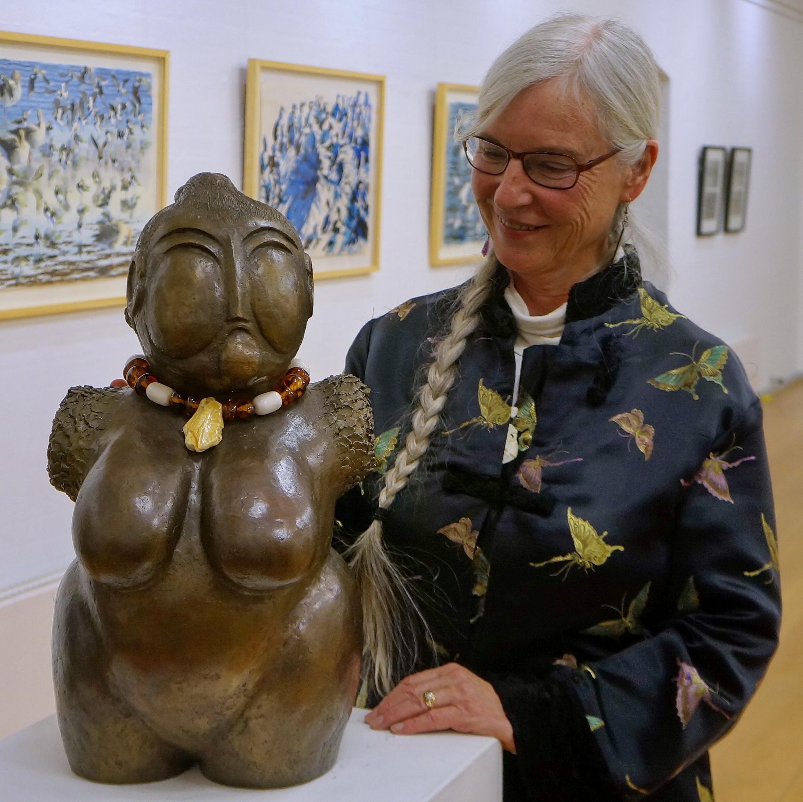

Lene Stevns Jensen

I’m a Danish sculptor and painter graduated from The Royal Danish Academy of Fine Arts. Making sculptures and jewelry is my main profession at the moment. Most of my art works are made out of ceramic, bronze, gemstones and ivory.
Women and nature are the main inspirations for most of my art pieces. As a female artist one of my main goals is to help women to be more aware of their strength and power.
Traveling has been always one of my passions besides art, and because of that I’ve had the honor to hold many exhibitions not only in Denmark but also in countries such as Germany, Sweden, USA, Canada, China and many other countries and be able to exhchange ideas with other artists.